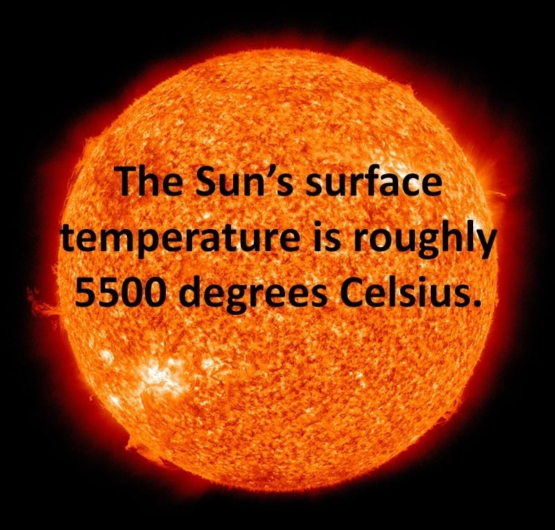

The Sun Profile
diameter: 1,390,000 km. mass: 1.989e30 kg
temperature: 5800 K (surface) 15,600,000 K (core)
History of The Sun
- The Sun is by far the largest object in the solar system. It contains more than 99.8% of the total mass of the Solar System (Jupiter contains most of the rest).
- It is often said that the Sun is an "ordinary" star. That's true in the sense that there are many others similar to it. But there are many more smaller stars than larger ones; the Sun is in the top 10% by mass. The median size of stars in our galaxy is probably less than half the mass of the Sun.
- The Sun is, at present, about 70% hydrogen and 28% helium by mass everything else ("metals") amounts to less than 2%. This changes slowly over time as the Sun converts hydrogen to helium in its core.
- The outer layers of the Sun exhibit differential rotation: at the equator the surface rotates once every 25.4 days; near the poles it's as much as 36 days. This odd behavior is due to the fact that the Sun is not a solid body like the Earth. Similar effects are seen in the gas planets. The differential rotation extends considerably down into the interior of the Sun but the core of the Sun rotates as a solid body.
- Conditions at the Sun's core (approximately the inner 25% of its radius) are extreme. The temperature is 15.6 million Kelvin and the pressure is 250 billion atmospheres. At the center of the core the Sun's density is more than 150 times that of water.
- The Sun's power (about 386 billion billion mega Watts) is produced by nuclear fusion reactions. Each second about 700,000,000 tons of hydrogen are converted to about 695,000,000 tons of helium and 5,000,000 tons (=3.86e33 ergs) of energy in the form of gamma rays. As it travels out toward the surface, the energy is continuously absorbed and re-emitted at lower and lower temperatures so that by the time it reaches the surface, it is primarily visible light. For the last 20% of the way to the surface the energy is carried more by convection than by radiation.
Interesting Facts about the Sun

The Sun is one of the millions of stars in the solar system. It is, however, larger than most (although not the biggest) and a very special star to us. Without the Sun there would be absolutely no life on Earth.
The Sun is 870,000 miles (1.4 million kilometers) across. This is so big it is hard to imagine, but it would take more than one million Earths to fill the size of the Sun!
The Sun is about 4.5 billion years old. It is thought to be halfway through its lifetime. Stars get bigger as they get older. As the Sun ages, it will get bigger. When this happens, it will consume some of the things close to it, and this includes Mercury, Venus and maybe even Earth and Mars. Luckily this is billions of years in the future.
Distance, Size and Mass
The Sun is the centre of the solar system. The Sun is 92.96 million miles (149.6 kilometers) away from Earth. The Sun is made of a ball of burning gases. These gases are 92.1% hydrogen and 7.8% helium. The sunlight we see on Earth left the Sun 8 minutes ago. This is the length of time it takes for the light to travel the distance between the Sun and the Earth
When the moon goes around the Earth, it sometimes finds itself between the Earth and the Sun. This is called a solar eclipse and makes the Earth dark whilst the moon shuts out most of the Sun’s light. This only lasts for a couple of hours while the moon continues its rotation and moves out of the way of the sun. In ancient astronomy, it was thought that the Sun moved. People believed that the Earth stayed still and the Sun rotated around it. About 2000 years ago some began to think it was the Sun that stays still whilst the planets make a path around it. This only became an accepted theory around the 1600s when Isaac Newton proposed the sun-centric solar system.
Orbit and Rotation
The Sun has a very big magnetic field. It is the most powerful magnetic field in the whole solar system. This field is regenerating itself, but scientists are unsure how. The Sun produces solar winds. These are a stream of particles from the Sun that stream out into space. This is why planets atmospheres are so important. They protect the planet from these solar winds. The Sun rotates but not as Earth does. On Earth, the planet is rotating at the same speed no matter where you are. The Sun does not rotate like a solid object and is spinning faster at its equator than it is at its poles. It is complicated to say how fast the Sun is spinning but depending whereabouts on the Sun you are looking at it takes between 24 and 38 days to spin around. The Sun has been both worshipped and feared throughout history by a variety of cultures.

Picture of Planet sun

Quick Facts
| Surface Temperature: | 5500°C |
| Circumference at Equator: | 4,370,005.6km |
| Diameter: | 1,392,684 km |
| Mass: | 1,989,100,000,000,000, 000, 000 billion kg (333,060 x Earth) |
| Type: | Yellow Dwarf (G2V) |
| Age: | 4.6 Billion Years |